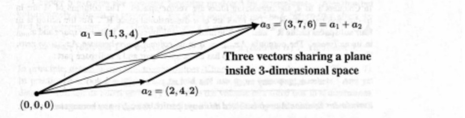

This is a linear algebra textbook with a new start. Chapter 1 begins as usual with vectors. We see their linear combinations and dot products. Then the new ideas come with matrices. Let me illustrate those ideas right away by an example.
Suppose we are given a 3 by 3 matrix A with columns a1, a2, a3 :
Those columns are three-dimensional vectors. The first vectors a1 and a2 connect the center point (0, 0, 0) to the points (1, 3, 4) and (2, 4, 2). The picture shows those points in 3-dimensional space (xyz space). The key to this matrix is the third vector a3 going to the point (3, 7, 6).
When I look at those vectors, I see something exceptional. Adding columns 1 and 2 produces column 3. In other words a1 + a2 = a3. In a 3-dimensional picture, a1 and a2 go from the center point (0, 0, 0) to the points (1, 3, 4) and (2, 4, 2). The picture shows how to add those vectors. It is normal that all combinations of two vectors will fill up a plane. (The plane is actually infinite, we just drew the part between the vectors.) What is really exceptional is that the third point a3 =(3, 7, 6) lies on this plane of a1 and a2.
Most points don't lie on that plane. Most vectors a3 are not combinations of a1 and a2. Most 3 by 3 matrices have independent columns. Then the matrix will be invertible. But these three columns are dependent because they lie on the same plane : a1 + a2 = a3.
